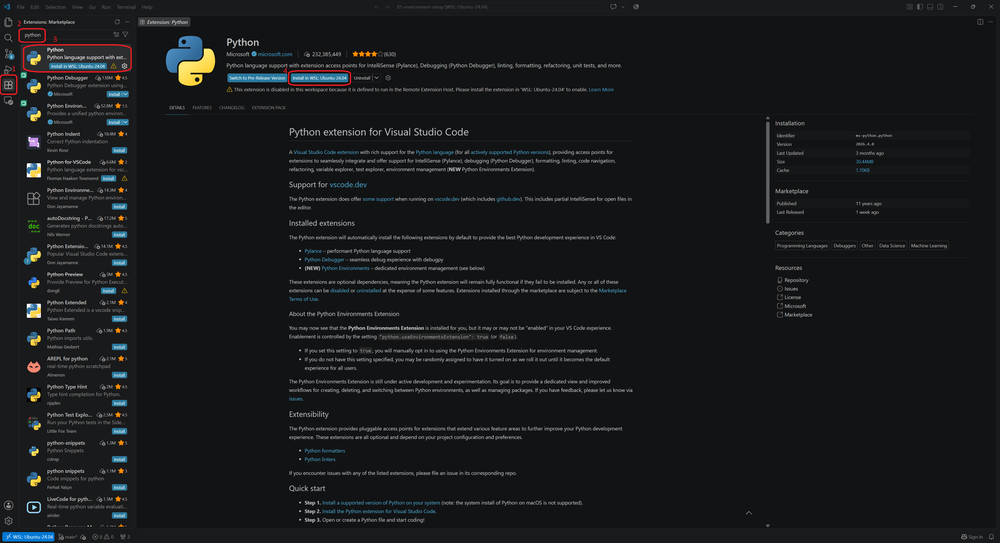
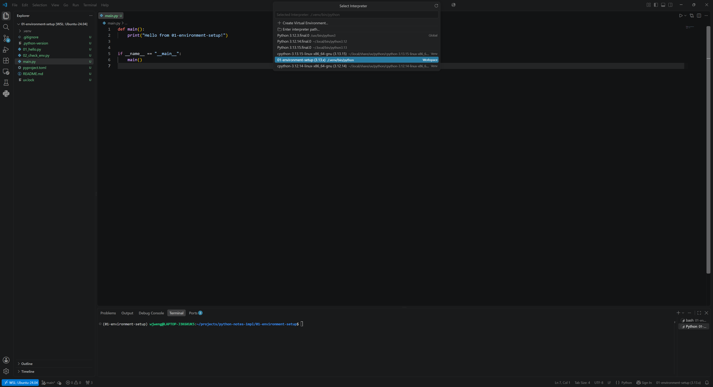
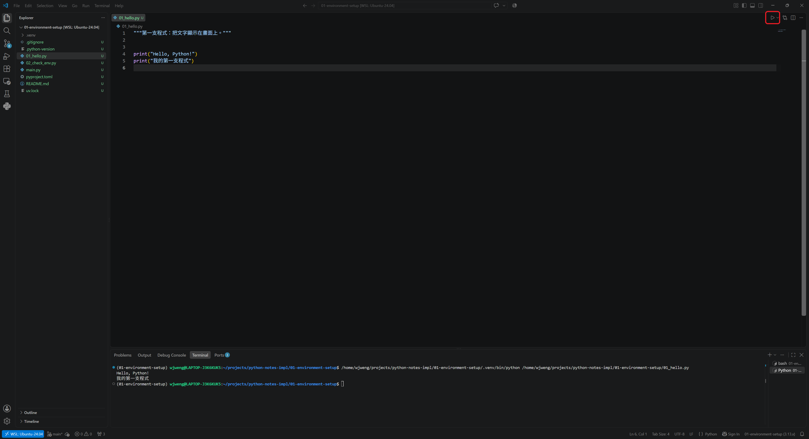
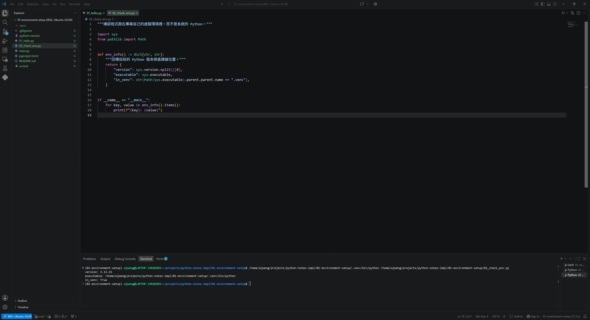

為了記錄自己學習 Python 的歷程，同時也給自己一些不要偷懶的壓力，我會將我學習到的內容，整理成一篇篇循序漸進的文章，從完全的新手開始，由淺入深開始學習。文章的選題與走向會有一些個人的偏好，很大程度也會跟不同時期我正在學習的領域有關，但大原則是該有的基本語法不會少，後面的章節會基於前面的章節來展開，如果有一些知識的斷層，那就再插入一個新的章節來補充。
話不多說，我們就開始吧！
首先，要先把編寫 Python 的環境準備好，我會使用 uv 這個 Python 套件與專案管理器，以及 VS Code 做為 Python 程式的編輯器。
想直接進入程式的部分的話，也可以跳過這一章。 我替每一章都製作了 Colab 版，用 Google 帳號登入就能改程式碼、按執行看結果，或複製一份到你的雲端硬碟中，這樣你所修改的東西就能保留在自己的儲存空間中，什麼都不用裝。 等你想在自己電腦上跑程式時，再回來看這章。
| 工具 | 做什麼 |
|---|---|
| uv | 管理 Python 版本、虛擬環境、套件 |
| VS Code | 寫程式的編輯器 |
另一個常見的做法是先到官網裝 Python，並使用 venv 建立虛擬環境，再用 pip 安裝需要的套件，現在 uv 把這三件事包在一起。我在後面也做了一個這兩種方法的對照表，有興趣的讀者可以參考。
關於 uv 的詳細說明可以參考官網，以下僅就安裝所需要的指令來做說明。
Windows 開啟 PowerShell，執行：
powershell -ExecutionPolicy ByPass -c "irm https://astral.sh/uv/install.ps1 | iex"macOS 或 Linux 開啟終端機，執行：
curl -LsSf https://astral.sh/uv/install.sh | sh裝完之後關掉終端機再重開一次，否則系統可能找不到這個新指令。重開後詢問版本：
uv --version有印出版本號就成功了。
uv python install 3.13這行會下載 Python 3.13 並交由 uv 管理。它不會動到系統原本的 Python，也不需要設定環境變數。
裝完確認一下，看看到底裝進去了沒、裝的是哪一版：
uv python list --only-installed會看到類似這樣的輸出（路徑依作業系統而不同）：
cpython-3.13.15-... ~/.local/bin/python3.13 -> ~/.local/share/uv/python/...
cpython-3.12.3-... /usr/bin/python3.12第一行的路徑是剛才裝的 Python 3.13，第二行是我的系統原本就有的 Python，uv 沒有動到它，兩者並存。
--only-installed 這個旗標是為了讓這行指令只列出已經安裝的 Python 版本；不加的話，uv 會把「可以下載但還沒裝」的版本也一起列出來（後方會標有 <download available>）。
接著我們就可以來建立第一個專案啦！找一個放程式的資料夾，執行：
uv init --no-package 01-environment-setup
cd 01-environment-setupuv 會建立一個資料夾，裡面長這樣：
01-environment-setup/
├── main.py # 程式進入點
├── pyproject.toml # 專案設定與套件清單
├── README.md
├── .python-version # 這個專案要用哪個 Python 版本
├── .gitignore # 哪些檔案不要進版本控制
└── .git/ # uv 順手幫你開好的版本控制庫後面三個是隱藏檔，uv init 會順手執行 git init，自動建立起版本控制的 .git/ .gitignore。現在可以完全不用管它，不影響 Python 的學習。
pyproject.toml 記錄這個專案需要哪些套件。有了它，換一台電腦只要一行指令就能把環境還原回來，不用憑記憶回想當初裝過什麼。
不加這個旗標的話，uv init 建出來的是另一種版型：
01-environment-setup/
└── src/
└── 01_environment_setup/
└── __init__.py程式碼被收進 src/ 底下，pyproject.toml 也會多出打包用的設定，這是要把程式發布成套件給別人安裝時的做法，同樣的現階段我們也可以先不用管它，用不到打包，所以加 --no-package 拿掉那層結構。
執行看看：
uv run main.py第一次執行時 uv 會自動建立虛擬環境，執行過後，畫面上會看到以下這行文字：
Hello from 01-environment-setup!恭喜你已經從頭到尾跑過一次環境建置與程式的執行，至此環境就已經通了，接下來我們要學習的就是改變 main.py 的內容，來達到我們想要控制程式輸出的結果。
我們前面一直提到虛擬環境，它究竟是什麼呢？uv 又幫我們做了什麼事？
假設同時有兩個專案，A 專案需要某套件的 1.0 版，B 專案需要 2.0 版。如果所有套件都裝在同一個地方，這兩個專案就會打架。虛擬環境的做法是讓每個專案有自己獨立的套件資料夾，互不干擾。
uv 會把虛擬環境放在專案底下的 .venv/。假設我們要裝一個 requests 套件：
uv add requests這行指令會做三件事：裝好 requests、寫進 pyproject.toml、更新鎖定檔 uv.lock。之後在別台電腦上只要執行 uv sync，就會裝回一模一樣的版本。
在進入下一個主題之前，我們來比較一下前面有提到的 pip 加 venv 的環境建置方式。對照表如下：
| 要做的事 | uv | 傳統做法 |
|---|---|---|
| 安裝 Python | uv python install 3.13 | 到官網下載安裝檔 |
| 建立專案 | uv init --no-package 專案名 | 自己開資料夾 |
| 建立虛擬環境 | 不用，執行時自動建 | python -m venv .venv |
| 啟動虛擬環境 | 不用 | source .venv/bin/activate |
| 安裝套件 | uv add requests | pip install requests |
| 記錄用了哪些套件 | 自動寫進 pyproject.toml | pip freeze > requirements.txt |
| 在別台電腦還原 | uv sync | pip install -r requirements.txt |
| 執行程式 | uv run main.py | python main.py（需先啟動虛擬環境） |
看完對照表，我們也順便來看一下兩種做法各自的優缺點，未來遇到需要選擇的場合，會比較知道怎麼判斷。
uv 的好處主要在這幾個地方：
venv、pip 之間切換。uv run 會自動使用專案底下的 .venv，忘記啟動這件事就不會發生。uv.lock 記下每個套件的確切版本，換一台電腦執行 uv sync 就能裝回一模一樣的環境，比 pip freeze 產生的 requirements.txt 嚴謹一些。至於要付出的代價，也有幾個：
兩種做法在這個階段都能完成這一系列的所有練習，如果你覺得舊有的方法看起來比較熟悉也沒關係，在這個階段不會有任何影響，把左右兩欄所做的事情對應起來就好。
為了可以在一個更方便、美觀的介面來編輯與執行 Python 程式，這系列的文章會使用 VS Code，到 code.visualstudio.com 下載安裝。開啟後先裝一個擴充套件就夠了：左側點擴充功能圖示，搜尋 Python，安裝 Microsoft 發行的版本。

在擴充功能裡搜尋 python，安裝 Microsoft 發行的那一個裝好後用 VS Code 開啟剛才的 01-environment-setup 資料夾。右下角會顯示目前使用的直譯器，確認它指向專案底下的 .venv。如果沒有，按 Ctrl + Shift + P（macOS 是 Cmd + Shift + P），輸入 Python: Select Interpreter，選擇 .venv 那一個。

清單裡標示 Workspace、路徑是 ./.venv/bin/python 的那一項，就是專案自己的虛擬環境如此一來，編輯器才會用這個環境的 Python 去檢查程式碼，而不是套用系統預設的設定，否則在這個環境中裝好的套件就會找不到，如果要執行的程式依賴這些套件的話就會產生錯誤。
要建立一份新的 Python 格式檔案可以在最上排工作列點選 File -> New File，或是在左側的檔案總管欄位按右鍵新增 New File，把這個檔案取名叫 01_hello.py，在裡面打上：
執行：
uv run 01_hello.py結果如下：
Hello, Python!
我的第一支程式也可以按 VS Code 右上方的三角形按鈕來執行 Python 程式。要注意的是，這個按鈕用的是剛才選定的直譯器，而不是 uv run，所以直譯器選對了，這個按鈕才會跑在專案自己的虛擬環境裡。

按右上角的三角形按鈕執行，結果會顯示在下方的終端機print() 是把東西顯示在畫面上的函數，括號裡放要顯示的內容。文字要用引號包起來，單引號或雙引號都可以，但同一個專案裡建議固定用一種。
寫一支小程式來驗證，新增檔案 02_check_env.py：
執行結果如下：
version: 3.13.15
executable: /path/to/01-environment-setup/.venv/bin/python
in_venv: True
in_venv 顯示 True，代表跑在專案自己的虛擬環境裡在這個網頁上按執行，結果會跟上面的圖示不一樣，原因是網頁版的 Python 是一份編譯成 WebAssembly，跑在瀏覽器分頁裡的 Python，它的環境大概跟你剛才建立的虛擬環境不同，想要看到 in_venv: True，還是要回到自己的電腦上執行。
in_venv 是 True，代表程式跑在專案自己的虛擬環境裡，不是系統的 Python。這行如果是 False，就要回頭檢查上面 VS Code 選直譯器那一步。
除了寫成檔案執行，也可以直接在終端機裡試語法：
uv run python會進入互動模式，提示符號是 >>>：
>>> 1 + 1
2
>>> print("測試")
測試
>>> exit()想確認某個語法怎麼運作，又不想特地開一個檔案時，這樣測試最快。輸入 exit() 可以離開互動模式。
選單裡沒有 .venv 是很常見的狀況，依序確認：
一、.venv 真的存在嗎？ 它是第一次跑 uv run 才建立的，uv init 不會產生。前面那步如果跳過了，回到終端機執行一次：
uv run main.py執行後資料夾裡才會多出 .venv。
二、VS Code 開的是 01-environment-setup 這一層嗎？ 擴充套件只會掃工作區的根目錄，開到上一層資料夾就會找不到。
三、跑指令的地方和 VS Code 是同一個系統嗎？ 這是在 Windows 系統下使用 WSL 的使用者最容易卡住的地方：在 WSL 的 Ubuntu 終端機裡跑 uv，卻用 Windows 版的 VS Code 開檔案，.venv/bin/python 是 Linux 執行檔，Windows 端會找不到它。
解法是讓 VS Code 連進 WSL，在 WSL 終端機裡的專案資料夾底下執行：
code .第一次會自動把 VS Code Server 裝進 WSL，然後開一個新視窗，左下角出現 WSL: Ubuntu 就表示連上了。如果還是沒有連上，可以點選左下角的 Open a Remote Window 圖示，選擇 Connect to WSL，應該就可以連上。
在 Windows 端裝的 Python 擴充套件，連進 WSL 之後也必須重新安裝一次，裝完再選一次直譯器，.venv/bin/python 就會出現。
如果不想要這麼麻煩，那就全部留在 Windows，用 PowerShell 跑 uv 吧！把專案放在 C:\ 底下。兩條路都可以，但不要混用。走 WSL 的話，專案建議放在 WSL 自己的家目錄，放在 /mnt/c/ 底下操作檔案會明顯變慢。
這一章我們準備好了 Python 的開發環境，也從頭建置了第一支 Python 的小程式，了解每一支應用程式的順利執行與否，其實是和它相依的環境息息相關的；我們也比較了 uv 和 pip + venv 的環境建置方式，可以選擇習慣或是喜歡的方法來開始。萬事俱備，之後的所有變化就會在這個程式的語法裡面進行。
code/ — 本章所有可執行範例